Laporan Praktikum 1 - Aplikasi Mobile
Input Widgets dan Basic Form Flutter
IF - Universitas Andalas
A. Pendahuluan
Basic Form
Basic Form merupakan widget yang berfungsi sebagai inputan nilai seperti TextField, TextFormField, CheckBox, Switch, Dropdown, Radio, Dialog, DatePicker, BottomSheet, Snackbar dan lain-lain. Basic Form digunakan untuk validasi dan mengelola inputan dari berbagai field. Form akan memberikan tampilan inputan kemudian inputan akan diperiksa apakah sudah sesuai dengan aturan atau format yang ditetapkan, selanjtunya data inputan akan diambil nilainya setelah proses pengecekan selesai dilakukan.
TextField
TextField adalah widget yang digunakan untuk memasukkan text oleh pengguna, widget ini biasanya digunakan untuk membuat form inputan seperti form login, pencarian dll. Fitur TextField yaitu menerima input dari keyboard, memiliki property yang lengkap style, decoration, dan jenis inputan, dan dapat mengelola teks menggunakan TextEditingController
TextFormField
TextFormField adalah widget versi lengkap dari TextField yang secara otomatis terintegrasi dengan logika validasi dan manajemen state dari sebuah form. Fiturnya menerima input teks dari keyboard, memiliki properti validator yang berfungsi untuk memeriksa apakah input sudah sesuai dengan aturan yang ditentukan, menampilkan pesan error secara otomatis di bawah field jika validasi gagal, dan berinteraksi dengan FormState untuk melakukan validasi secara kolektif dengan validate() method.
GlobalKey
GlobalKey merupakan objek unik atau key yang digunakan untuk mengidentifikasi dan mengakses state secara global, artinya kita dapat mengakses widget dari widget mana saja.
FormState
FormState adalah kelas yang mengelola status dari Form, sepert status validasi setiap form inputan (TextFormField).
setState()
setState merupakan sebuah method yang ada pada flutter, method ini digunakan untuk rebuild ulang state yang ada pada StatefulWidget atau secara sederhana method ini digunakan untuk memberitahu flutter bahwa state yang ada pada StatefulWidget telah berubah dan widget tersebut perlu untuk rebuild.
validate()
Metode validate() merupakan sebuah fungsi yang terdapat pada FormState yang digunakan untuk menjalankan validasi pada setiap TextFormField yang ada di dalam Form.
Const
Const adalah keyword dalam Flutter yang digunakan untuk mendeklarasikan variabel yang nilainya tidak dapat diubah setelah dideklarasikan. const pada widget Flutter digunakan untuk membuat widget menjadi konstanta pada saat kompilasi (compile-time). Penggunaan const dapat meningkatkan peforma karena widget const akan dibuat sekali dan akan disimpan pada memori sehingga dapat digunakan Kembali tanpa build ulang. Jika tidak menggunakan const maka widget akan di build() berkali-kali.
B. Tujuan Praktikum
Tujuan praktikum ini yaitu mahasiswa mampu membuat membuat basic form untuk menerima inputan dari keyboard dan mengelola inputan :
- Membuat beberapa input widgets
- Membuat dan mengontrol inputan dari user.
C. Alat
Perangkat dan dependensi yang digunakan selama praktikum:
- Computer / laptop yang telah terinstall lingkungan flutter development
D. Langkah-langkah Praktikum
A. Basic Form TextField
Langkah pertama adalah membuat file Dart baru di dalam folder lib dengan nama form-textfield. File ini digunakan untuk membuat tampilan basic form sederhana menggunakan widget TextField sebagai input dan ElevatedButton sebagai tombol untuk menjalankan suatu aksi.
Setelah file dibuat, tampilan basic form dibuat menggunakan widget TextField untuk menerima input dari pengguna dan ElevatedButton sebagai tombol yang nantinya digunakan untuk menjalankan suatu aksi ketika ditekan. Berikut kode program nya
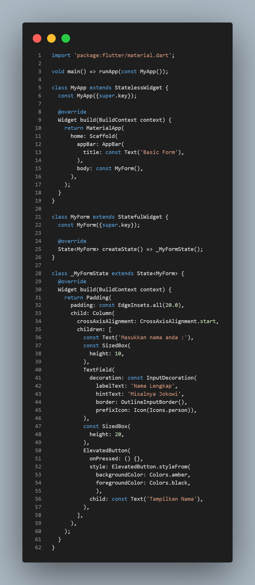
Kode diawali dengan import 'package:flutter/material.dart'; yang digunakan untuk mengimpor berbagai komponen Material Design yang disediakan Flutter. Fungsi main() merupakan titik awal eksekusi aplikasi dan runApp(const MyApp()) digunakan untuk menjalankan widget utama aplikasi. Class MyApp menggunakan StatelessWidget karena bagian tersebut belum membutuhkan perubahan state. Di dalam method build(), MaterialApp digunakan sebagai struktur utama aplikasi, sedangkan Scaffold menyediakan struktur dasar halaman berupa AppBar dan body. Bagian AppBar menampilkan judul Basic Form, sementara body memanggil widget MyForm.
Class MyForm dibuat menggunakan StatefulWidget, kemudian state-nya dikelola oleh class _MyFormState. Penggunaan StatefulWidget memungkinkan halaman dikembangkan lebih lanjut dengan state yang dapat berubah ketika pengguna memberikan input. Pada method build(), widget Padding digunakan untuk memberikan jarak pada isi halaman sebesar 20 pixel. Selanjutnya Column digunakan untuk menyusun komponen secara vertikal.
Widget Text digunakan untuk memberikan keterangan "Masukkan nama anda :", sedangkan SizedBox memberikan jarak vertikal antara komponen. Widget TextField merupakan bagian utama yang digunakan untuk menerima input teks dari pengguna. Properti InputDecoration digunakan untuk memberikan tampilan pada input, yaitu labelText sebagai label, hintText sebagai contoh input, border untuk memberikan garis pembatas, dan prefixIcon untuk memberikan ikon orang di sebelah kiri field.
Widget ElevatedButton digunakan sebagai tombol aksi. Pada tahap awal, properti onPressed masih kosong sehingga tombol belum menjalankan proses tertentu. Properti style digunakan untuk mengatur warna tombol, sedangkan child berisi teks "Tampilkan Nama" sesuai kode pada modul. Setelah kode disimpan dan dijalankan, aplikasi akan menampilkan sebuah form sederhana yang terdiri dari label, kolom input nama, dan tombol.
Setelah tampilan dasar berhasil dibuat, langkah berikutnya adalah menambahkan TextEditingController pada class _MyFormState. Controller digunakan untuk mengambil dan mengelola teks yang dimasukkan oleh pengguna.
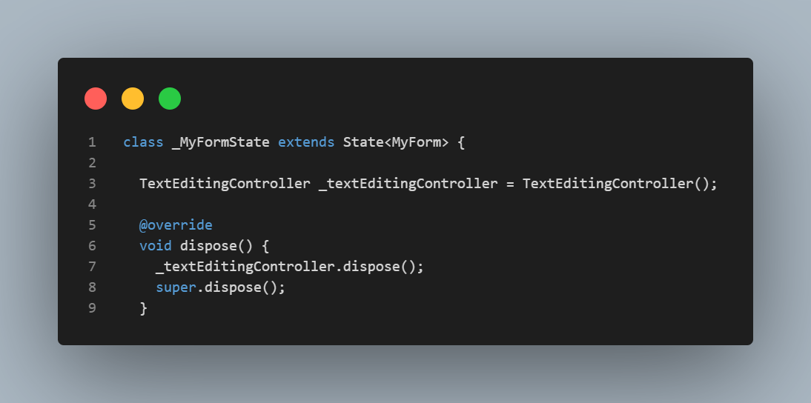
TextEditingController digunakan untuk mengontrol isi dari TextField. Dengan adanya controller, program dapat mengambil nilai teks yang dimasukkan pengguna. Variabel _textEditingController nantinya dihubungkan dengan widget TextField.
Method dispose() digunakan untuk membersihkan controller ketika widget sudah tidak digunakan. Pemanggilan _textEditingController.dispose() bertujuan untuk melepaskan resource yang digunakan oleh controller, kemudian super.dispose() menjalankan proses pembersihan dari parent class.
Setelah controller dibuat, TextField kemudian dihubungkan dengan controller dan ditambahkan beberapa properti untuk mengatur jenis input serta event ketika pengguna mengetik.
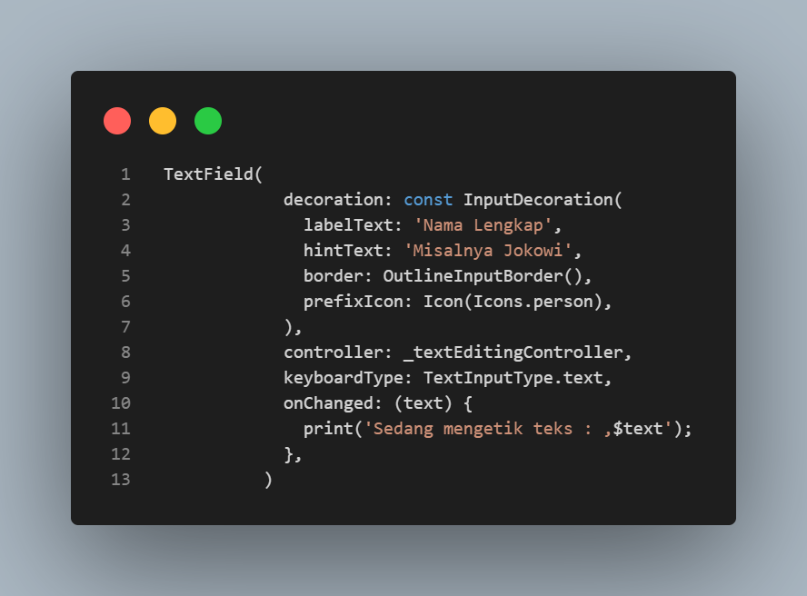
Properti controller menghubungkan TextField dengan _textEditingController, sehingga isi input dapat diakses oleh program. Properti keyboardType menentukan jenis keyboard yang digunakan ketika pengguna memberikan input, dalam hal ini menggunakan TextInputType.text karena input berupa teks.
Properti onChanged merupakan event listener yang dijalankan ketika isi TextField mengalami perubahan. Parameter text berisi teks yang sedang dimasukkan pengguna. Pada kode tersebut, nilai tersebut dicetak menggunakan print() sehingga perubahan input dapat dilihat melalui console ketika aplikasi dijalankan.
Selanjutnya, aksi pada ElevatedButton diubah agar dapat mengambil nilai yang dimasukkan pada TextField dan menampilkannya menggunakan SnackBar.
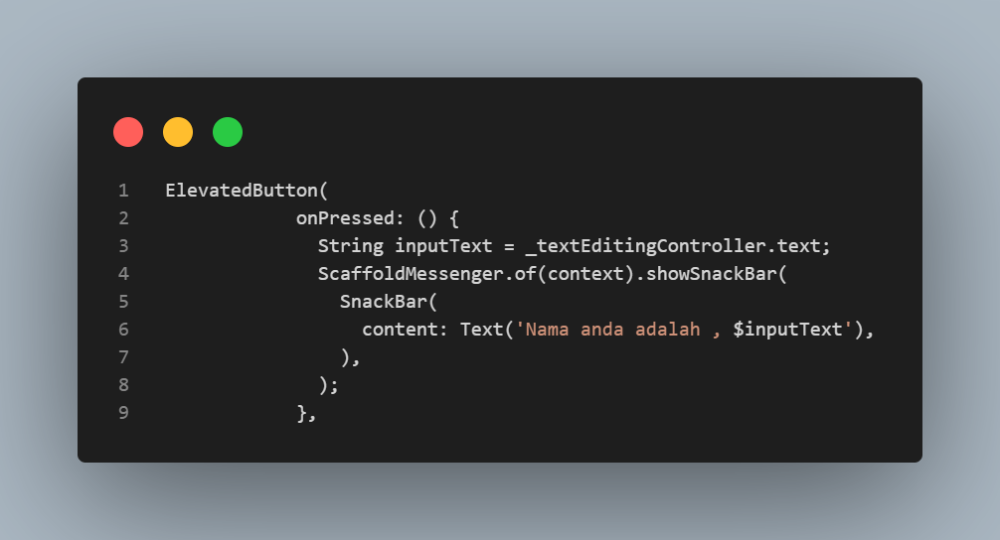
Ketika tombol ditekan, program mengambil nilai dari _textEditingController.text dan menyimpannya ke dalam variabel inputText. Nilai tersebut kemudian digunakan pada widget Text di dalam SnackBar.
ScaffoldMessenger.of(context).showSnackBar() digunakan untuk menampilkan pesan sementara di bagian bawah layar. Dengan demikian, nama yang sebelumnya dimasukkan pengguna pada TextField dapat ditampilkan setelah tombol ditekan.
Setelah seluruh kode selesai ditambahkan, program disimpan kemudian dijalankan menggunakan perangkat atau emulator Flutter. Pengguna dapat memasukkan nama ke dalam TextField, kemudian menekan tombol Tampilkan Nama. Program akan mengambil input tersebut melalui TextEditingController dan menampilkannya dalam bentuk SnackBar.
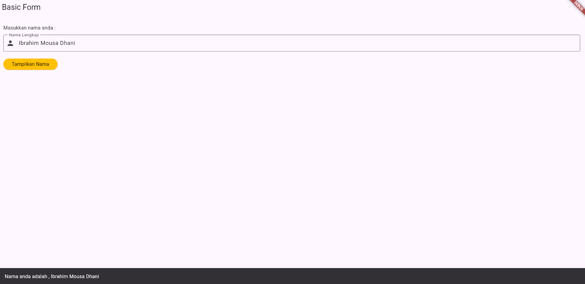
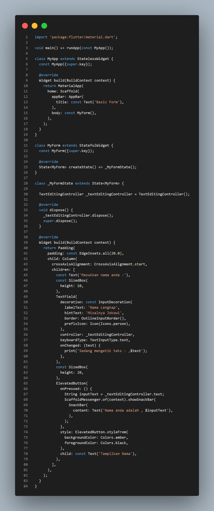
B. Basic Form TextFormField
Sama seperti bagian A, langkah awalnya adalah membuat file Dart baru di dalam folder lib, tetapi sekarang dengan nama form-textformfield.dart. File ini digunakan untuk membuat form yang menggunakan dua buah TextFormField, yaitu untuk nama dan email, serta sebuah ElevatedButton untuk melakukan proses submit.
Kode awal untuk membuat tampilan form adalah sebagai berikut.
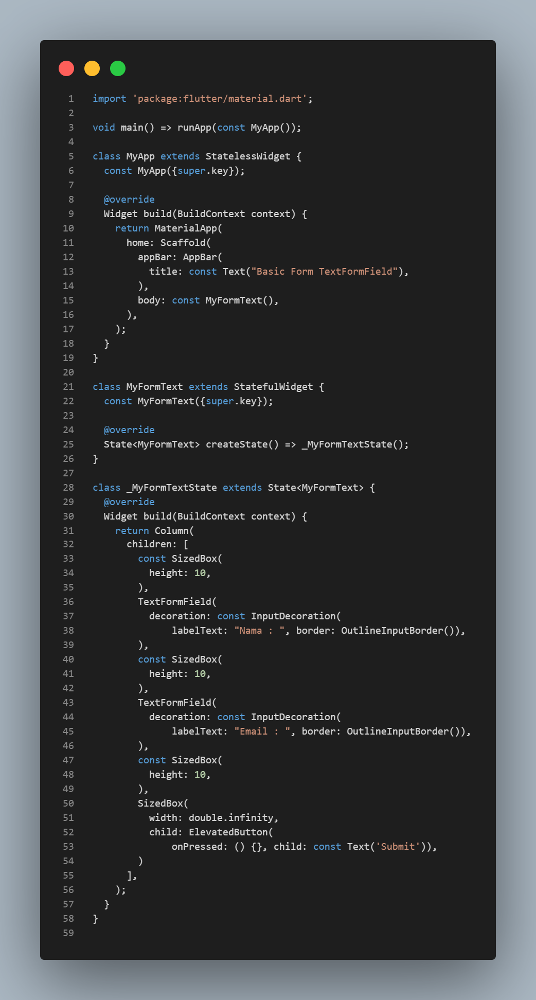
Bagian awal kode memiliki struktur yang sama dengan contoh TextField, yaitu mengimpor library Material, menjalankan MyApp, dan membuat MaterialApp sebagai root aplikasi. Scaffold digunakan sebagai struktur dasar halaman dengan AppBar yang memiliki judul Basic Form TextFormField. Body dari halaman memanggil widget MyFormText.
Class MyFormText menggunakan StatefulWidget, kemudian state-nya dikelola oleh _MyFormTextState. Pada method build(), widget Column digunakan untuk menyusun seluruh komponen form secara vertikal. Dua buah TextFormField digunakan untuk menerima input nama dan email. Masing-masing memiliki InputDecoration dengan labelText dan OutlineInputBorder.
Widget SizedBox digunakan untuk memberikan jarak antar-field. Pada bagian akhir terdapat ElevatedButton yang memiliki lebar penuh melalui width: double.infinity. Pada tahap ini onPressed masih kosong sehingga tombol belum melakukan proses validasi atau pengiriman data.
Setelah tampilan awal selesai, _MyFormTextState ditambahkan beberapa variabel berikut.
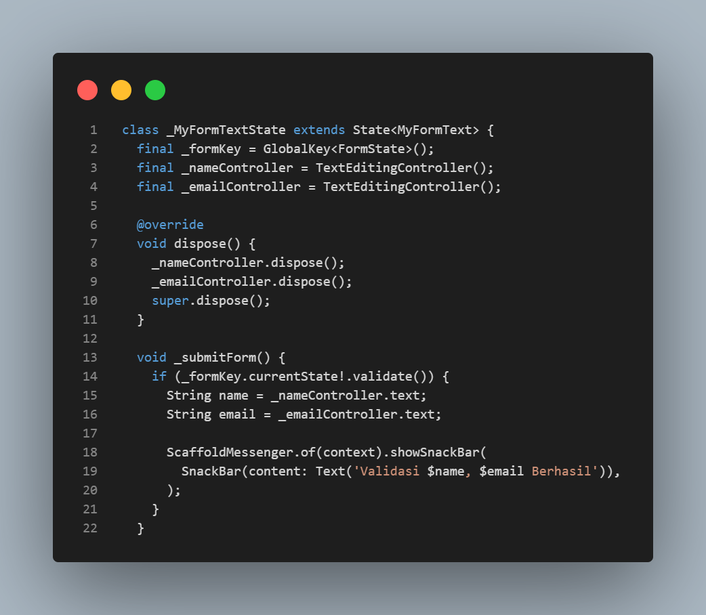
Variabel _formKey dibuat menggunakan GlobalKey
Variabel _nameController dan _emailController digunakan sebagai controller untuk masing-masing TextFormField. Dengan controller tersebut, program dapat mengambil nilai nama dan email yang dimasukkan pengguna.
Method dispose() digunakan untuk membersihkan kedua controller ketika widget tidak lagi digunakan. Sementara itu, _submitForm() merupakan method yang dipanggil ketika pengguna menekan tombol submit. Pada method tersebut, _formKey.currentState!.validate() digunakan untuk menjalankan validasi seluruh field yang terdapat di dalam Form.
Jika seluruh validasi berhasil, nilai nama dan email diambil menggunakan .text, kemudian ditampilkan melalui SnackBar dengan pesan "Validasi [nama], [email] Berhasil".
Pada tahap berikutnya, seluruh widget input dibungkus menggunakan widget Form dan diberikan properti key: _formKey. Hal ini diperlukan agar FormState dapat diakses menggunakan _formKey.
Dengan adanya Form, seluruh TextFormField di dalamnya dapat dikelola sebagai satu kesatuan, terutama ketika proses validasi dijalankan melalui _formKey.currentState!.validate().
Kode TextFormField untuk input nama diubah menjadi:
Properti controller menghubungkan field dengan _nameController sehingga nilai input nama dapat diambil oleh program. Properti validator digunakan untuk menentukan aturan validasi. Parameter value berisi nilai yang dimasukkan pengguna.
Kondisi value == null || value.isEmpty digunakan untuk memeriksa apakah input kosong. Apabila input kosong, validator mengembalikan pesan "Masukkan nama anda". Jika input telah terisi, validator mengembalikan null, yang menunjukkan bahwa tidak terdapat kesalahan pada field tersebut.
Kode TextFormField untuk input email diubah menjadi seperti gambar berikut:
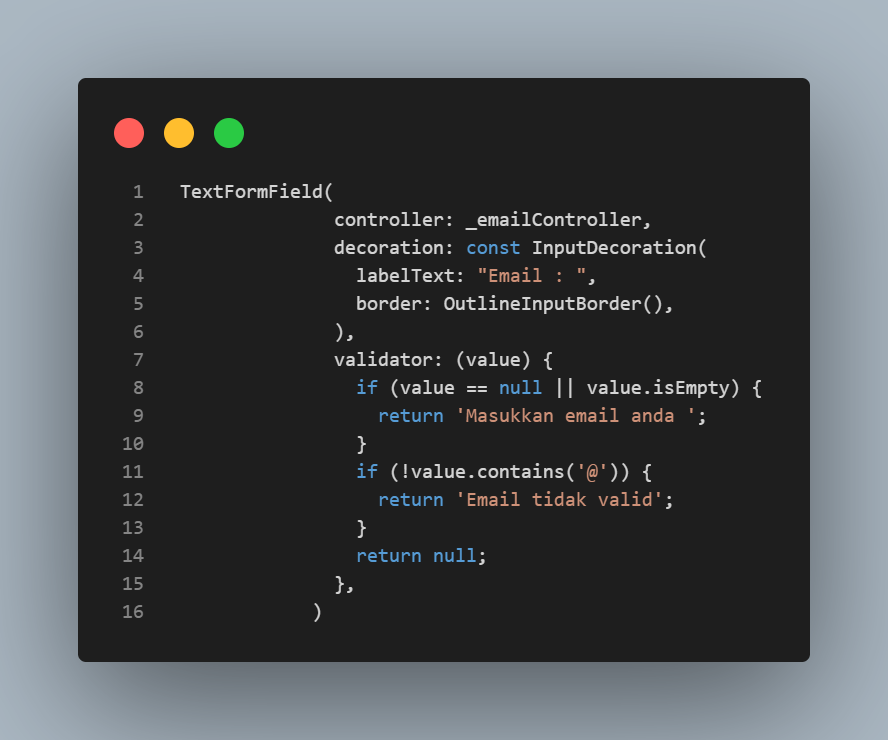
Pada field email, controller yang digunakan adalah _emailController. Validator pertama-tama memeriksa apakah email kosong. Jika kosong, program menampilkan pesan "Masukkan email anda". Selanjutnya, method contains('@') digunakan untuk memeriksa keberadaan karakter @ pada input email. Jika karakter tersebut tidak ditemukan, validator mengembalikan pesan "Email tidak valid".
Jika kedua pemeriksaan berhasil dilewati, validator mengembalikan null, sehingga input email dianggap valid oleh form.
Selanjutnya, ElevatedButton dihubungkan dengan method _submitForm().
Properti onPressed sekarang tidak lagi kosong, tetapi berisi _submitForm. Artinya, ketika tombol Submit ditekan, Flutter akan menjalankan method tersebut. Method _submitForm() kemudian menjalankan validasi terhadap seluruh field melalui _formKey.currentState!.validate().
Setelah seluruh kode selesai dibuat, program disimpan dan dijalankan. Pengguna dapat mencoba beberapa kondisi, seperti membiarkan nama kosong, membiarkan email kosong, atau memasukkan email tanpa karakter @. Flutter akan menampilkan pesan kesalahan sesuai validator yang telah dibuat.
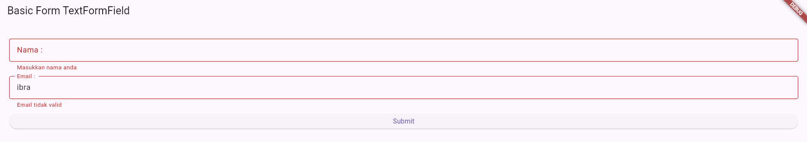
Jika nama dan email telah diisi dengan benar dan email memiliki karakter @, validasi akan berhasil dan SnackBar akan menampilkan nama serta email yang dimasukkan pengguna. Kode lengkap dari form tersebut menggunakan Form, GlobalKey
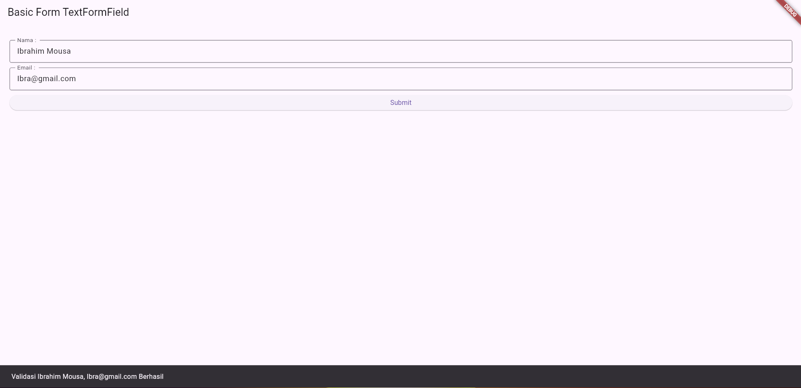
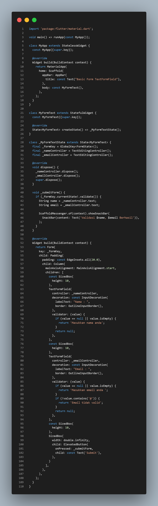
Latihan - Kalkulator
Berdasarkan instruksi modul, aplikasi kalkulator harus dapat menjalankan operasi kali, bagi, tambah, dan kurang (KABATAKU). Aplikasi menggunakan dua widget input untuk menerima nilai pertama dan nilai kedua, ElevatedButton untuk menjalankan operasi, serta widget Text untuk menampilkan hasil operasi.
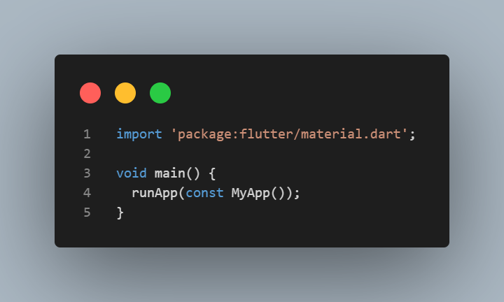
Kode import digunakan untuk mengimpor library Material Flutter. Fungsi main() merupakan titik awal aplikasi. Di dalamnya terdapat runApp(const MyApp()) yang menjalankan widget MyApp sebagai aplikasi utama.
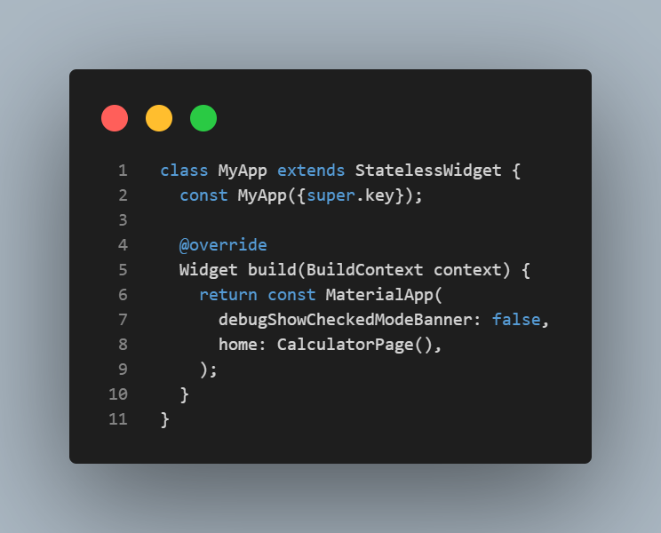
Class MyApp menggunakan StatelessWidget karena bagian ini hanya berfungsi sebagai pembungkus utama aplikasi. MaterialApp digunakan sebagai root aplikasi Flutter. Properti debugShowCheckedModeBanner: false digunakan untuk menghilangkan tulisan debug pada pojok aplikasi. Properti home diarahkan ke CalculatorPage, yaitu halaman utama kalkulator.
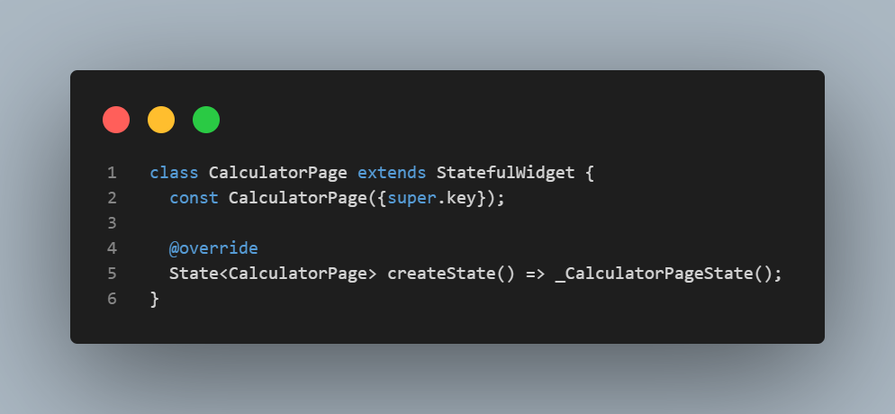
CalculatorPage menggunakan StatefulWidget karena hasil kalkulator akan berubah berdasarkan input dan operasi yang dipilih pengguna. State dari widget tersebut dikelola oleh _CalculatorPageState.
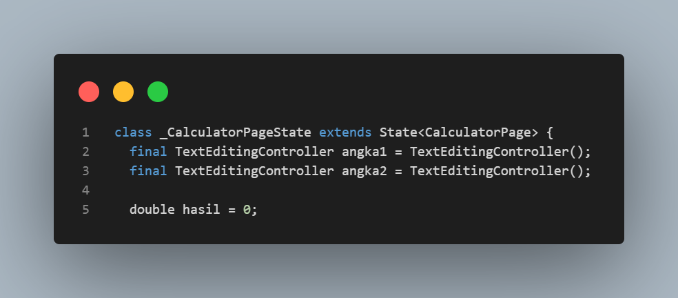
Dua TextEditingController digunakan untuk mengambil nilai dari dua input angka. angka1 digunakan untuk input pertama, sedangkan angka2 digunakan untuk input kedua.
Variabel hasil bertipe double digunakan untuk menyimpan hasil perhitungan. Nilai awalnya adalah 0. Karena hasil akan berubah ketika operasi dilakukan, perubahan tersebut akan dikelola menggunakan setState().
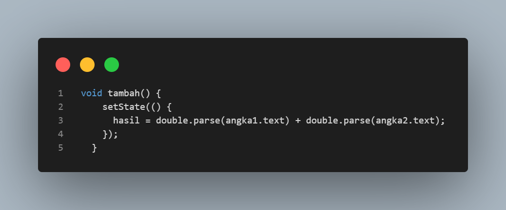
Method tambah() digunakan untuk melakukan operasi penjumlahan. Nilai dari kedua TextField awalnya berbentuk String sehingga perlu dikonversi menjadi angka menggunakan double.parse(). Setelah kedua angka dijumlahkan, hasilnya disimpan ke variabel hasil.
setState() digunakan agar Flutter mengetahui bahwa nilai state telah berubah dan tampilan yang menggunakan nilai hasil perlu diperbarui.
Method kurang() memiliki mekanisme yang sama dengan penjumlahan, tetapi operator yang digunakan adalah -. Nilai dari input pertama dikurangi dengan nilai input kedua, kemudian hasilnya disimpan ke variabel hasil.
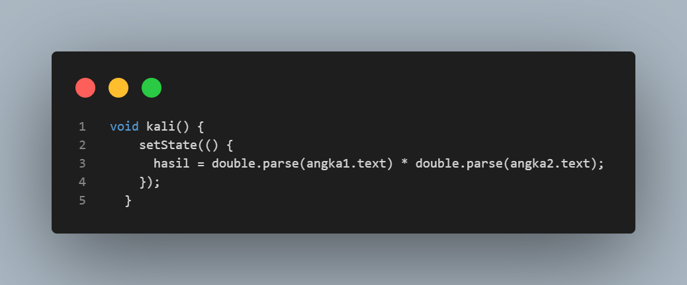
Method kali() digunakan untuk melakukan operasi perkalian. Nilai kedua input dikonversi menjadi double, kemudian dikalikan menggunakan operator *. Hasil perhitungan disimpan ke variabel hasil.
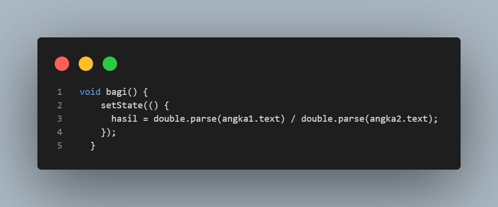
Method bagi() digunakan untuk melakukan operasi pembagian. Nilai kedua input dikonversi menjadi double, kemudian dibagi menggunakan operator /. Hasil perhitungan disimpan ke variabel hasil.
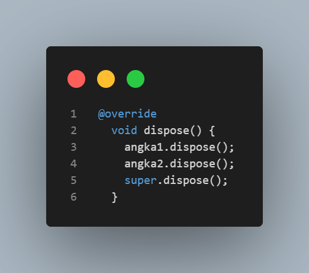
Method dispose() digunakan untuk membersihkan kedua TextEditingController ketika halaman tidak lagi digunakan. Hal ini dilakukan agar resource yang digunakan controller dapat dilepaskan dengan benar.
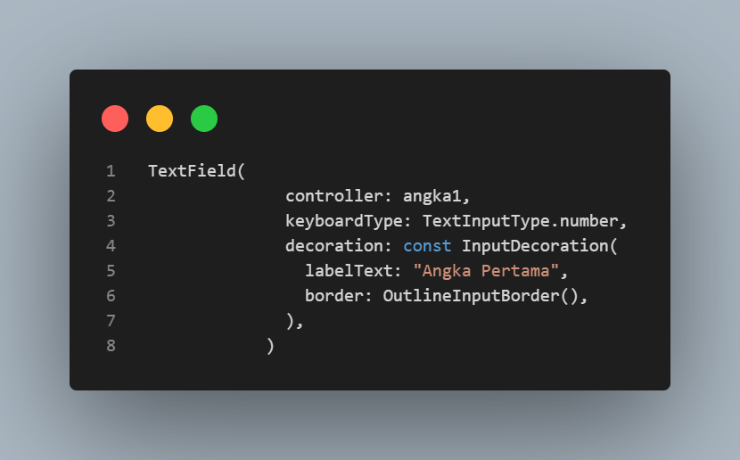
TextField pertama digunakan untuk menerima angka pertama. Controller angka1 digunakan untuk mengambil nilainya. Properti keyboardType: TextInputType.number membuat input menggunakan jenis keyboard angka. InputDecoration memberikan label dan border pada field.
Input kedua dibuat dengan struktur yang sama:
Field tersebut menggunakan controller angka2 dan digunakan untuk menerima angka kedua.
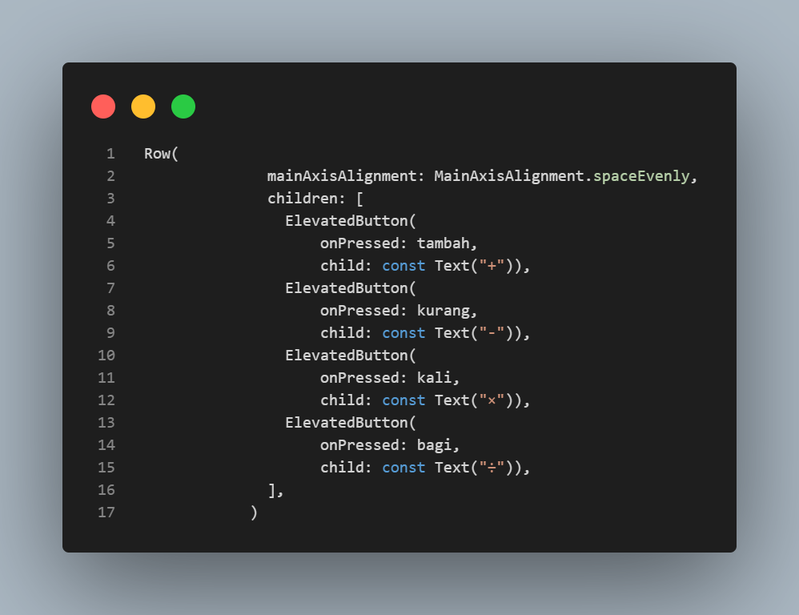
Row digunakan untuk menyusun empat tombol operasi secara horizontal. Tombol pertama memanggil method tambah(), tombol kedua memanggil kurang(), tombol ketiga memanggil kali(), dan tombol keempat memanggil bagi().
Dengan demikian, ElevatedButton berfungsi sebagai event listener yang menjalankan operasi sesuai tombol yang ditekan pengguna.
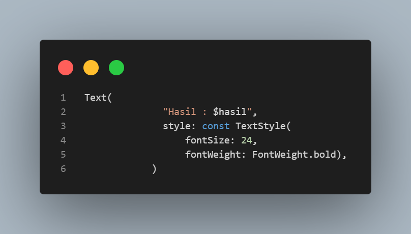
Widget Text digunakan untuk menampilkan hasil perhitungan. Nilai $hasil merupakan string interpolation yang mengambil nilai dari variabel hasil. Ketika operasi dilakukan dan setState() dipanggil, widget Text akan diperbarui sehingga menampilkan hasil terbaru.
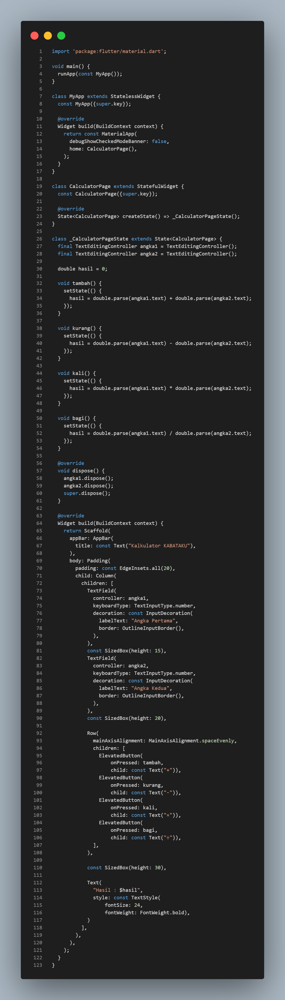
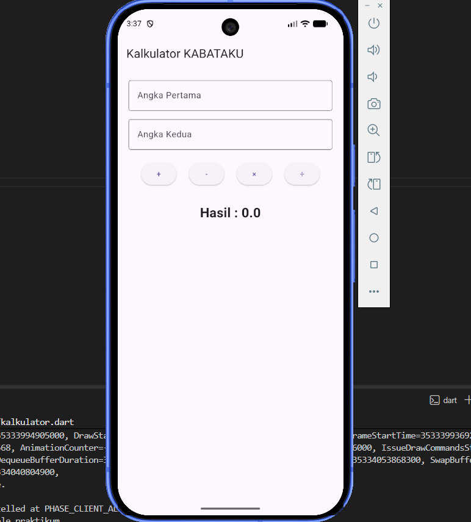
Disini saya menjalanakan nya menggunakan Android Studio dan melakukan pengujian yaitu dengan memasukkan dua angka pada masing-masing field, kemudian menekan tombol operasi. Sebagai contoh, jika angka pertama adalah 10 dan angka kedua adalah 5, tombol + menghasilkan 15, tombol - menghasilkan 5, tombol × menghasilkan 50, dan tombol ÷ menghasilkan 2.
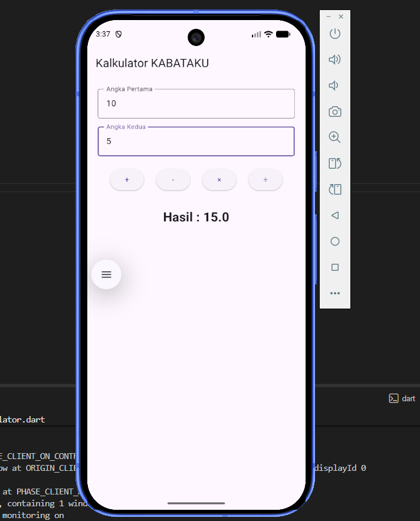
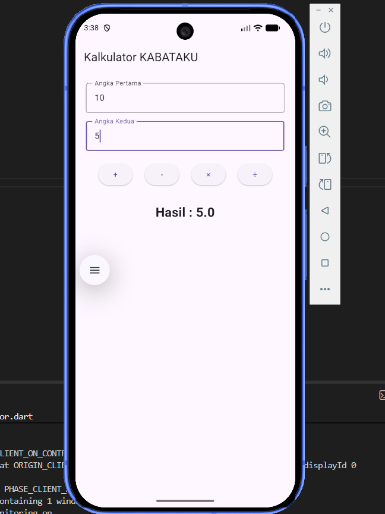
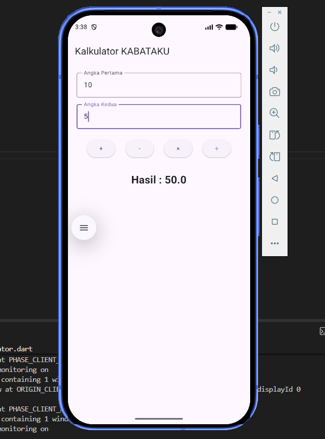
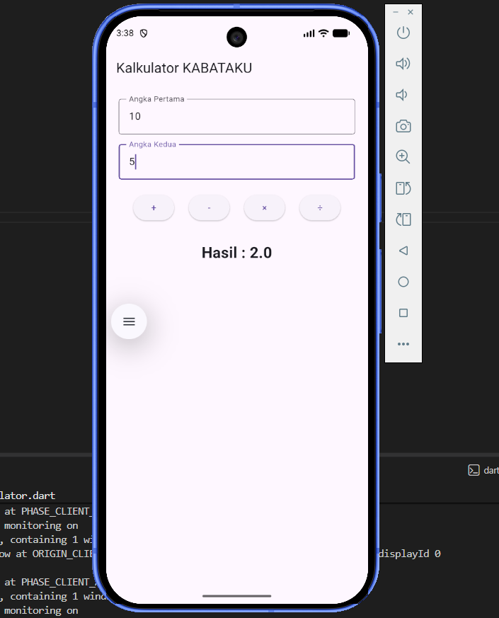
Dengan demikian, aplikasi telah memenuhi ketentuan latihan karena memiliki dua input, tombol ElevatedButton untuk menjalankan operasi, dan widget Text untuk menampilkan hasil.
Latihan - Form Pendaftaran Pengguna
Latihan kelas B meminta mahasiswa membuat implementasi Basic Form Flutter berupa form pendaftaran pengguna. Form terdiri dari empat input, yaitu nama, email, password, dan confirm password, serta satu tombol submit. Modul juga menentukan bahwa aplikasi dibuat menggunakan dua file Dart, yaitu main.dart dan user_registration_form.dart. Validasi yang diwajibkan adalah email harus menggunakan format yang memiliki karakter @, sedangkan password dan confirm password harus memiliki nilai yang sama. Tombol submit harus memanggil method _submitForm().
File main.dart
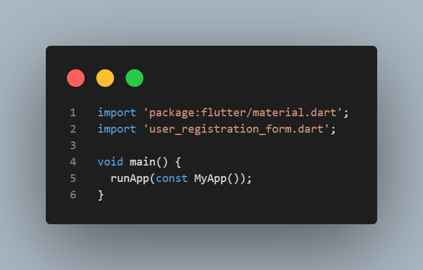
Baris pertama mengimpor library Material Flutter. Baris kedua mengimpor file user_registration_form.dart, karena widget UserRegistrationForm dibuat pada file tersebut. Fungsi main() menjadi titik awal aplikasi dan menjalankan MyApp.
2. Membuat MyApp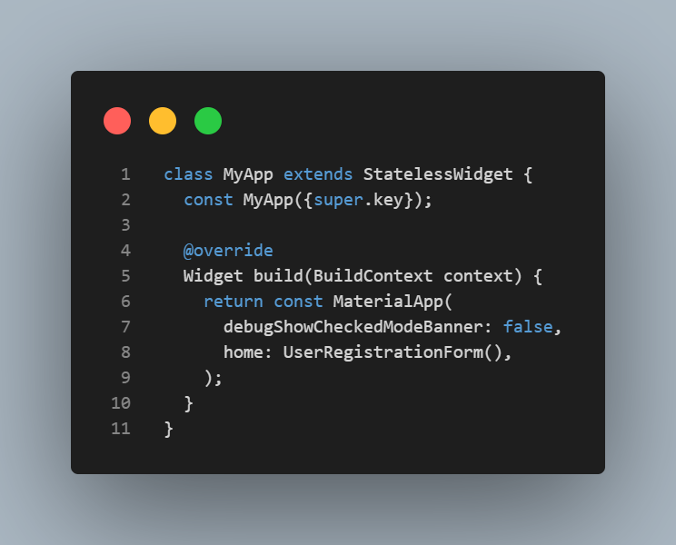
Class MyApp menggunakan StatelessWidget sebagai root aplikasi. MaterialApp digunakan untuk membangun struktur aplikasi Flutter. Properti home diarahkan langsung ke UserRegistrationForm, sehingga ketika aplikasi dijalankan, halaman form registrasi akan ditampilkan sebagai halaman utama.
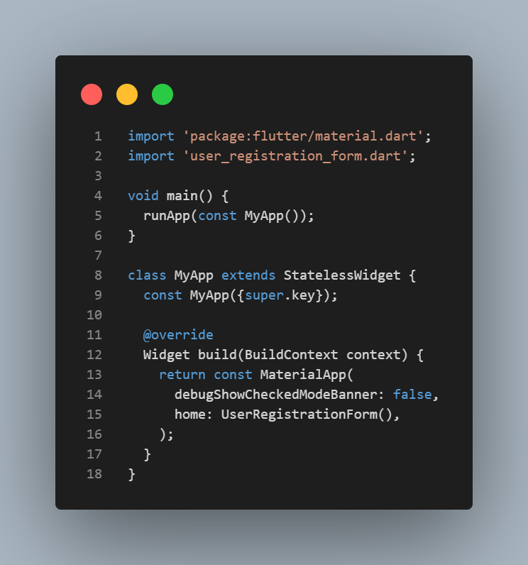
File user_registration_form.dart
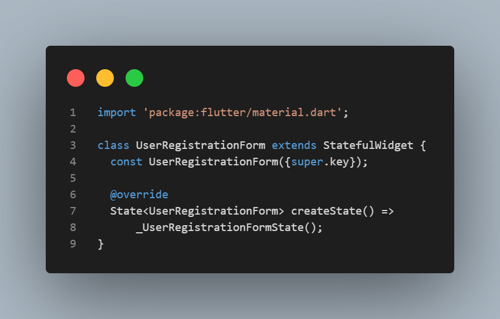
File ini kembali mengimpor library Material Flutter karena menggunakan berbagai widget Flutter. UserRegistrationForm dibuat menggunakan StatefulWidget sesuai dengan ketentuan latihan. Penggunaan StatefulWidget diperlukan karena form memiliki state berupa input pengguna dan proses validasi yang dapat berubah selama aplikasi digunakan.
2. Membuat Form Key dan Controller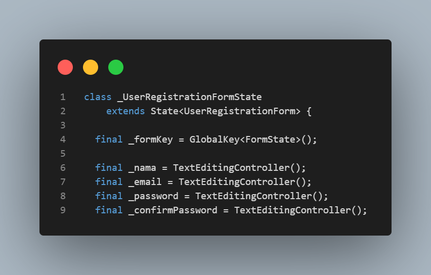
_formKey digunakan untuk mengakses state dari Form, khususnya ketika proses validasi dilakukan. Empat TextEditingController dibuat untuk masing-masing input.
_nama digunakan untuk mengambil input nama, _email untuk mengambil email, _password untuk mengambil password, dan _confirmPassword untuk mengambil konfirmasi password.
3. Membersihkan Controller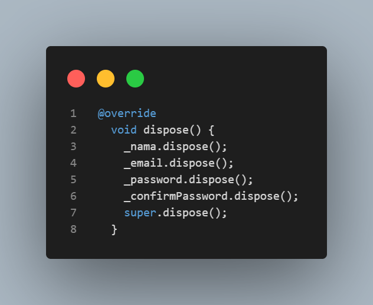
Method dispose() digunakan untuk membersihkan seluruh controller ketika widget sudah tidak digunakan. Setiap controller dipanggil dispose() agar resource yang digunakan dapat dilepaskan dengan benar.
4. Membuat Method _submitForm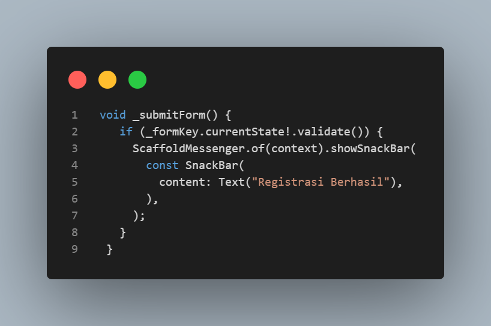
Method _submitForm() merupakan method yang dipanggil ketika pengguna menekan tombol Submit. Pertama, _formKey.currentState!.validate() menjalankan seluruh validator pada TextFormField.
Jika semua input memenuhi aturan validasi, kondisi if bernilai benar dan program menampilkan SnackBar dengan pesan "Registrasi Berhasil". Jika terdapat input yang tidak valid, proses tidak dilanjutkan dan pesan kesalahan dari validator akan ditampilkan pada field yang bersangkutan.
5. Membuat Scaffold dan AppBar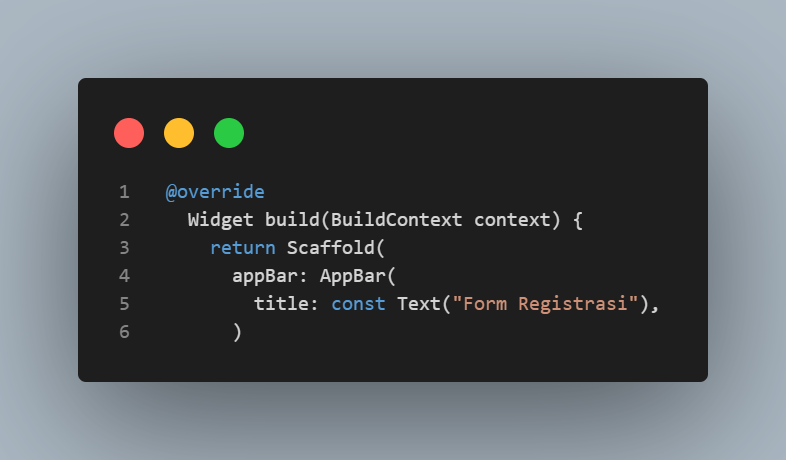
Scaffold digunakan sebagai struktur dasar halaman aplikasi. AppBar ditempatkan pada bagian atas halaman dan memiliki judul Form Registrasi.
6. Membuat Form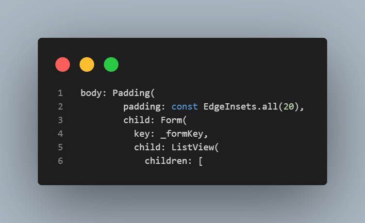
Padding digunakan untuk memberikan jarak 20 pixel antara isi form dengan batas halaman. Widget Form digunakan sebagai wadah seluruh input sehingga validasi dapat dikelola secara terpusat. Properti key: _formKey menghubungkan Form dengan GlobalKey
ListView digunakan untuk menempatkan seluruh input secara vertikal dan memungkinkan halaman dapat digulir apabila kontennya tidak muat pada layar.
7. Input Nama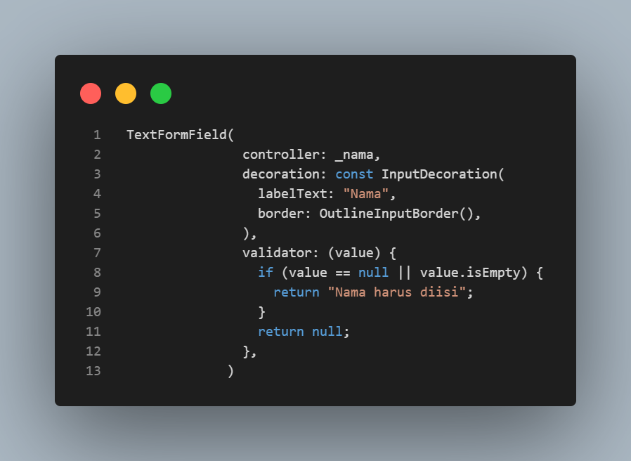
TextFormField pertama digunakan untuk menerima nama pengguna. Controller _nama digunakan untuk mengambil nilai input. Validator memastikan bahwa field tidak kosong. Jika pengguna tidak mengisi nama, program menampilkan pesan "Nama harus diisi". Jika nama sudah diisi, validator mengembalikan null yang berarti input valid.
8. Input Email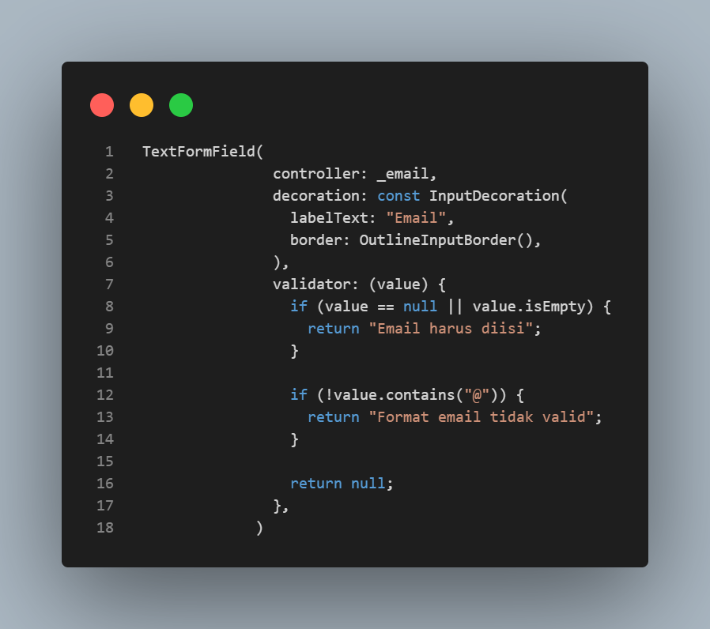
Field email menggunakan _email sebagai controller. Validator pertama memeriksa apakah email kosong. Jika kosong, muncul pesan "Email harus diisi".
Selanjutnya digunakan value.contains("@") untuk memeriksa apakah input memiliki karakter @. Apabila karakter tersebut tidak ditemukan, program menampilkan "Format email tidak valid". Jika kedua kondisi tersebut terpenuhi, validator mengembalikan `null dan email dianggap valid.
9. Input Password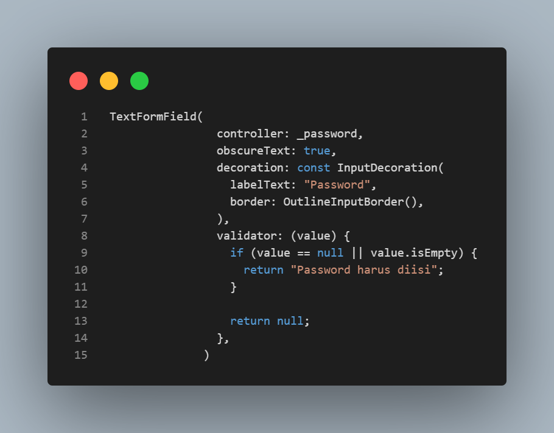
Field password menggunakan controller _password. Properti obscureText: true digunakan agar karakter password tidak ditampilkan secara langsung pada layar. Validator memastikan password tidak boleh kosong. Jika kosong, program menampilkan pesan "Password harus diisi".
10. Input Confirm Password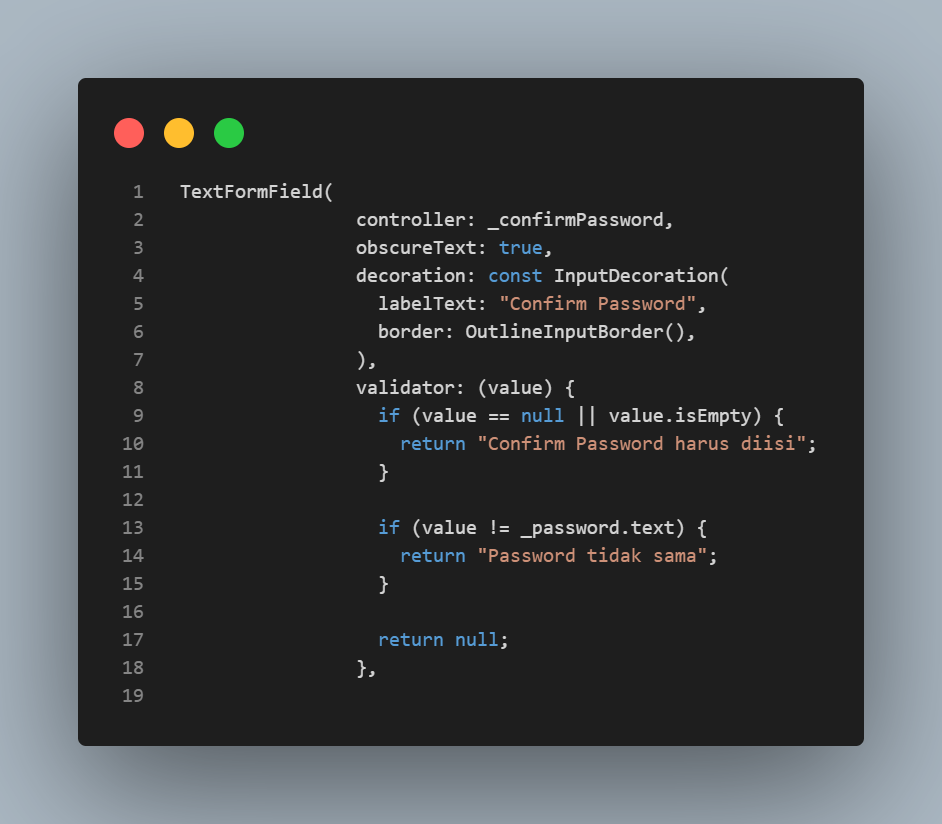
Field Confirm Password digunakan untuk memasukkan kembali password. Controller yang digunakan adalah _confirmPassword, sedangkan obscureText: true digunakan agar password tetap tersembunyi.
Validator pertama memeriksa apakah confirm password kosong. Setelah itu, nilai confirm password dibandingkan dengan _password.text. Apabila keduanya berbeda, program menampilkan pesan "Password tidak sama". Jika keduanya sama, validator mengembalikan null dan input dianggap valid.
11. Membuat Tombol Submit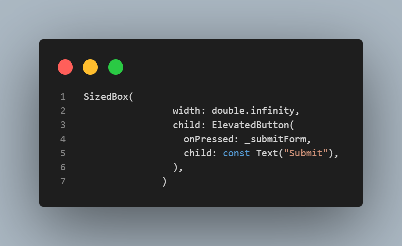
SizedBox digunakan untuk membuat tombol memiliki lebar penuh dengan double.infinity. ElevatedButton digunakan sebagai tombol untuk mengirimkan form. Properti onPressed dihubungkan dengan _submitForm, sehingga ketika tombol ditekan, Flutter menjalankan proses validasi terhadap seluruh input.
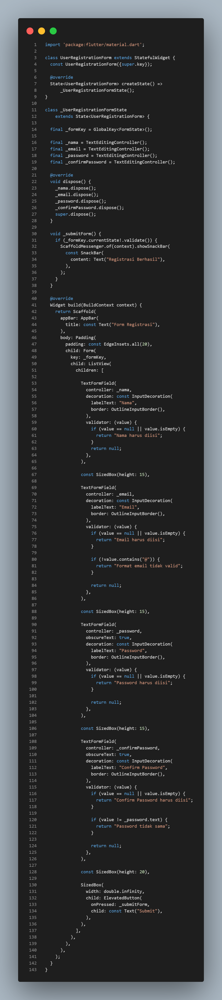
Setelah seluruh kode selesai dibuat, program disimpan dan dijalankan (file main.dart). Disini saya menjalankan aplikasi menggunakan Android Studio.
Pengujian dilakukan dengan mencoba beberapa kondisi. Jika nama tidak diisi, akan muncul pesan "Nama harus diisi". Jika email kosong, akan muncul pesan "Email harus diisi", sedangkan email tanpa karakter @ akan menghasilkan pesan "Format email tidak valid". Password yang kosong akan menghasilkan pesan "Password harus diisi".
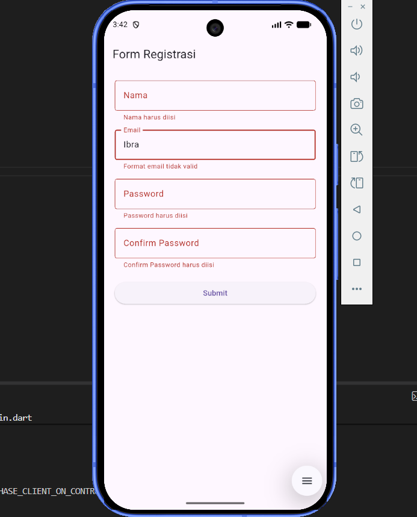
Pada bagian confirm password, program akan memeriksa apakah nilai yang dimasukkan sama dengan password sebelumnya. Jika berbeda, akan muncul pesan "Password tidak sama". Jika seluruh input telah memenuhi ketentuan, proses validasi berhasil dan aplikasi menampilkan SnackBar dengan pesan "Registrasi Berhasil".
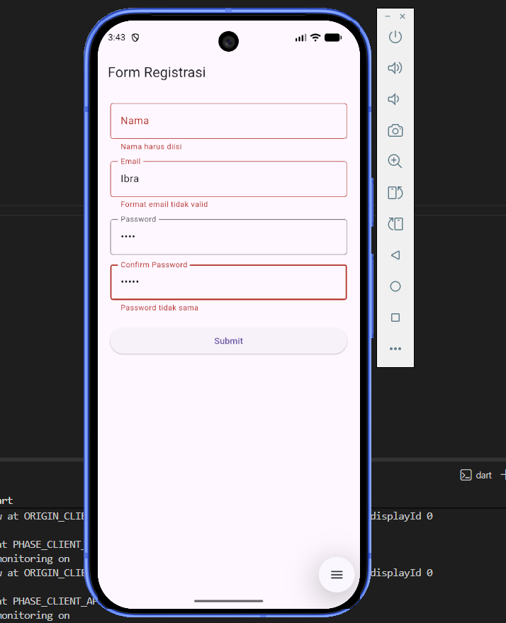
Jika seluruh input telah memenuhi ketentuan, proses validasi berhasil dan aplikasi menampilkan SnackBar dengan pesan "Registrasi Berhasil".
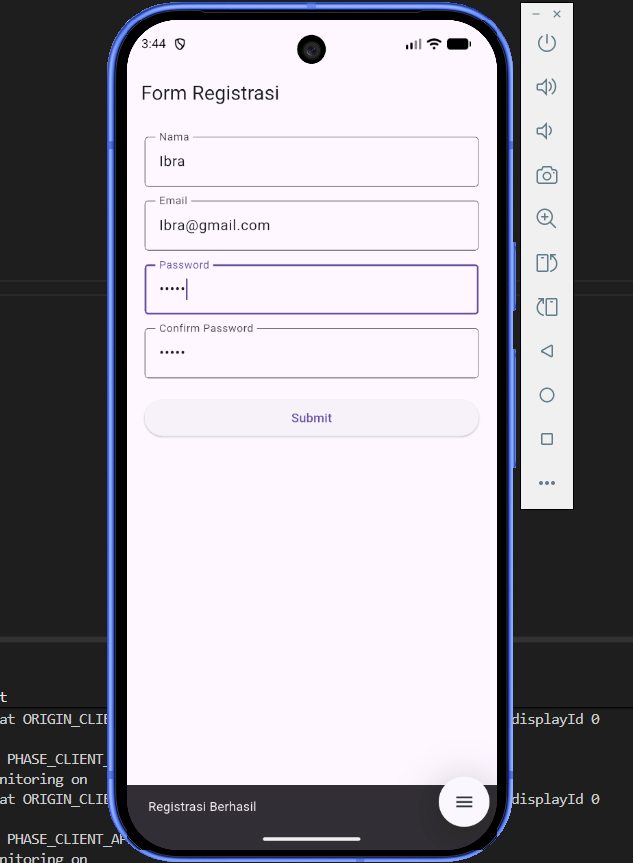
Dengan implementasi tersebut, latihan ini telah memenuhi ketentuan modul, yaitu menggunakan dua file Dart, MaterialApp, UserRegistrationForm sebagai halaman utama, StatefulWidget, empat TextFormField, validasi email menggunakan karakter @, validasi kesamaan password dan confirm password, serta method _submitForm() yang dipanggil melalui tombol Submit.
E. Kesimpulan
Berdasarkan praktikum yang telah dilaksanakan, dapat disimpulkan bahwa framework Flutter menyediakan berbagai widget dan komponen yang dapat digunakan untuk membangun antarmuka aplikasi secara terstruktur, interaktif, dan fungsional. Praktikum ini memberikan pemahaman mengenai penggunaan berbagai komponen input dan form, seperti TextField, TextFormField, TextEditingController, Form, dan GlobalKey